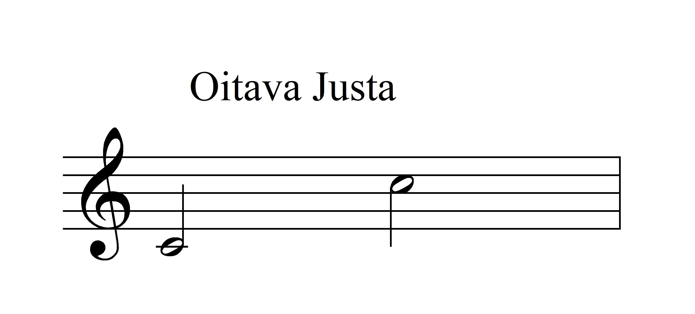
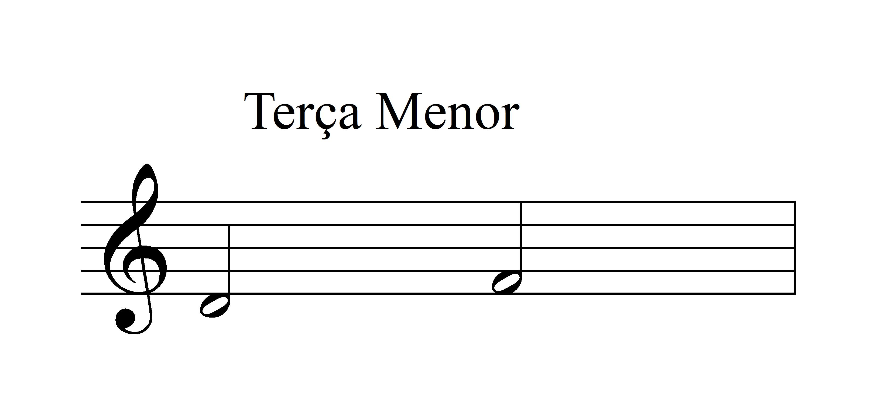

Introdução
Segundo o Dicionário Grove de Música "intervalo é a distância entre duas alturas. Os intervalos são descritos de acordo com o número de graus que abrangem numa escala diatônica contados de forma inclusiva."
Ainda segundo o dicionário "os
intervalos podem ser identificados por suas razões de frequências. Uma oitava é 2:1, uma quinta justa é 3:2. Dentro da oitava o intervalo é sempre complementado por sua inversão (a terça menor é a inversão da sexta maior)."
Consonâncias
Consonância, segundo o Grove, é a "vibração concordante de ondas sonoras de diferentes frequências relacionadas entre si pelas razões de números inteiros."
As consonâncias são dividas em perfeitas (quinta justa, oitava justa) e imperfeitas
(terças e sextas).
Consonâncias Perfeitas
Consonâncias imperfeitas
Dissonâncias
Os intervalos aumentados e diminutos, assim como segundas e sétimas, são considerados dissonâncias.
De acordo com o Grove, o intervalo dissonante é instável e carece de resolução para uma dissonância.
Eu, Carlos Veiga Filho, discordo
da necessidade de resolução.
Quartas
As quartas justas são casos especiais e podem ser consideradas consonâncias em alguns casos e dissonâncias em outros. Teóricos de diferentes períodos divergem em relação à classificação da quarta justa.
Cursos
Aumente os seus conhecimentos sobre intervalos musicais fazendo o nosso mini-curso gratuito ou o curso avançado de intervalos